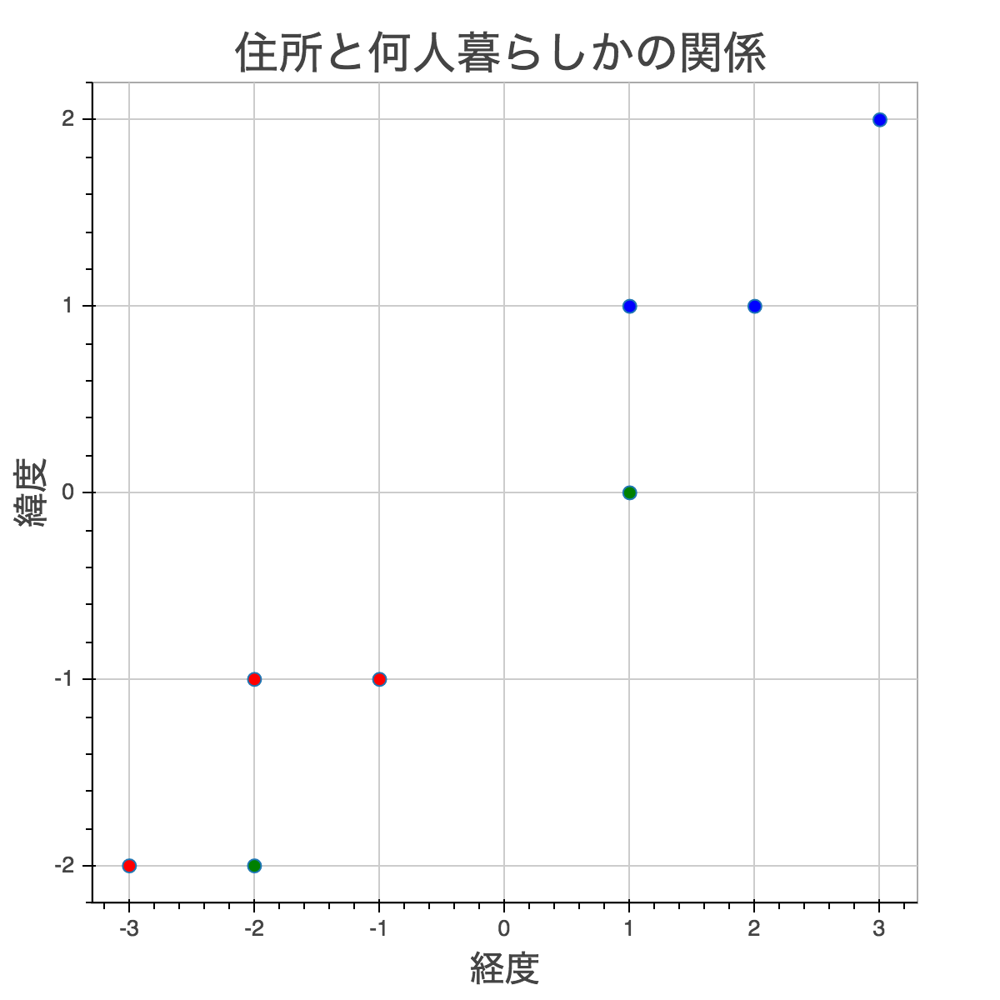
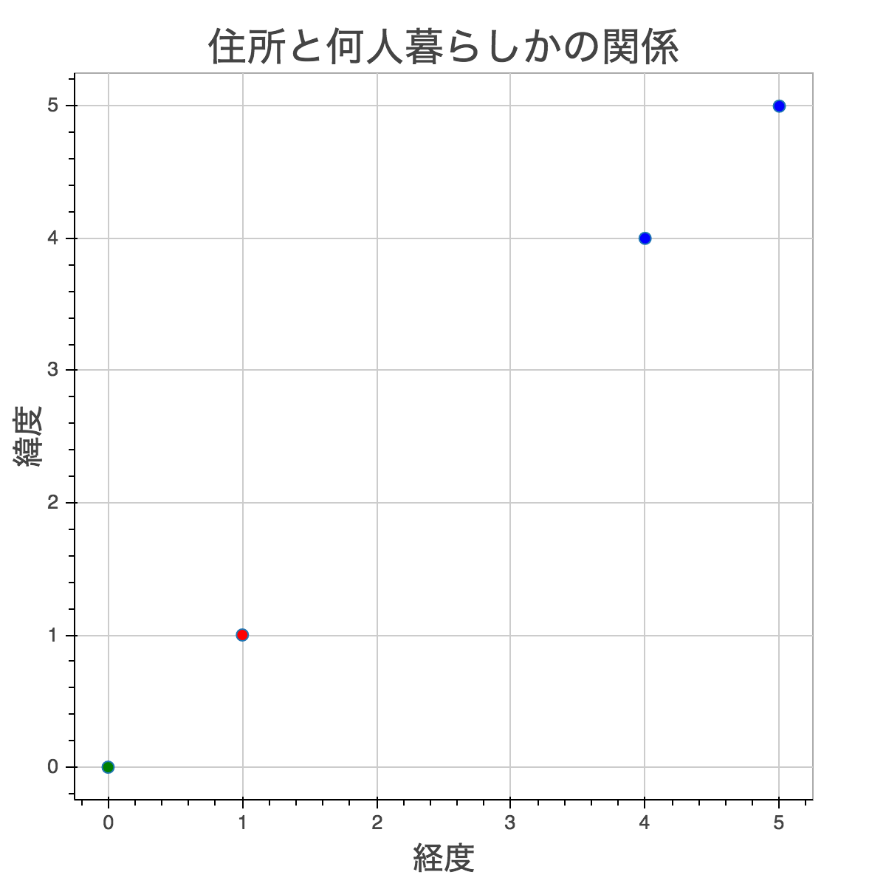

k-Nearest Neighbors(k-NN)は一番簡単に理解出来るSupervised Learningのモデルです。
k-NNの説明
以下の図は、住所とその人が一人暮らしかどうかの関係を表しています。ルームシェアは一人暮らし以外と考えて下さい。住所は緯度と経度を使っています。東京の緯度と経度はこのデータと全然違いますが、このグラフが東京だと仮定してみましょう。

南西には一人暮らしが多く、北東にはルームシェアが多いことが分かります。
ではこのデータを元に、緯度と経度からその人が一人暮らしかどうか予測したいとしましょう。k-NNがどうやって予測するかというと、その値の隣人(Neighbor)を見て予測します。エリアによって一人暮らしが多く住んでいたりルームシェアが多かったりするので、隣人を見て予測するのは悪くない方法です。
ちなみにk-NNには場所のデータだけでなくどんなデータでも使えます。実際一人暮らしかどうか予測するには間取りや賃料の方が役に立ちますよね。ただk-NNのコンセプトを理解するために住所が一番分かり易いため今回は住所を使っています。
更に、これはk-NNに限ったことではないのですが、Featureが２つでなければいけないわけでもありません。１つでも良いし１００個でも良いです。
k-NNは隣人を何人参考にするかパラメータを設定します。k-NNのkがそのパラメータのことです。なのでk=1であれば最も近い人を参考に、k=3であれば最も近い３人を見て多い方を採用します。
k-NNを手で計算してみよう
上記の例を使ってk-NNを手で計算します。これが出来ればコードを書くのは簡単です。今まで「隣人」や「近い」という単語をカジュアルに使っていましたが、近似値はManhattan DistanceかEuclidean Distanceを使います。Manhattan Distanceはそれぞれの軸（この場合xとy）の差異の絶対値を足したもので、Euclidean Distanceは２点を直線で結んだ時の距離です。Manhattan Distanceの方が計算が楽なのでまずこれを使いましょう。
では中心に一番近い赤の点(-1, -1)と右のTest sample(1, 0)の距離を計算してみましょう。
このようにそれぞれのTest sample毎に全Training sampleとの距離を計算します。その後それを距離が近い順に並べ、kの分だけ取り、その中で多いクラスを採用します。
Test sample(1, 0)のケースで言うと、k=3の場合(1, 1), (2, 2), (-1, -1)が最も近い３つです。その中でルームシェアが２つなので、ルームシェアと予測します。タイを避ける為kには奇数を使います。
Exercises
コードはここにあります。 https://github.com/itandi/mltp
Scikit-learn Style
Exerciseではk-NNをnumpyで書いてもらいますが、APIはscikit-learnと同じにしています。scikit-learnはどのモデルでもAPIが同じなので非常に使いやすいです。以下の簡単な例を見てみましょう。
import numpy as np
from sklearn.neighbors import KNeighborsClassifier
## Inputは2d array(N, number of features)
x_train = np.array([[-1, -1], [-2, -1], [-3, -2], [1, 1], [2, 1], [3, 2]])
## Targetは1d array(N, )
y_train = np.array([1,1,1,0,0,0])
## モデルのinitialization.
neighbor = KNeighborsClassifier()
## fitでモデルの学習
neighbor.fit(x_train, y_train)
## predictは複数のデータを取るので2d arrayを渡す
x_test = np.array([[1, 0], [-2, -2]])
print(neighbor.predict(x_test))
scikit-learnではMLのモデルをEstimatorと呼んでいて、Estimatorはクラスになっています。まずEstimatorをinitializeし、fitでモデルの学習をします。予測したい時はpredictを呼びます。
The Starter Code
以下がStarter codeです。k-NNは他のモデルと違いfitでは何もせず単にxとyを保存するだけです。_predict_oneで1 sample毎に処理をします。今は毎回1をreturnしています。
import numpy as np
class MyKNeighborsClassifier(object):
def __init__(self, n_neighbors=5):
self.n_neighbors = n_neighbors
def fit(self, x, y):
self.x = x
self.y = y
return self
def _predict_one(self, test):
return 1
def predict(self, x):
return [self._predict_one(i) for i in x]
x = np.array([[-1, -1], [-2, -1], [-3, -2], [1, 1], [2, 1], [3, 2]])
y = np.array([1,1,1,0,0,0])
neighbor = MyKNeighborsClassifier()
neighbor.fit(x, y)
print(neighbor.predict(np.array([[1, 0], [-2, -2]])))
Exerciseの答えは次のExerciseに書いてあります。
Exercise 1
最初に距離を測るメソッド_distanceを書きましょう。Manhattan Distanceを使います。
Exercise 2
distanceを計算したら小さい順にソートし、self.n_neighborsの数だけ取ります。
その後_compute_weightsでweightを計算します。weightは上では説明しませんでしたが、各データの重要度のようなものです。まずはuniform weightsを計算します。これは上でやったのと同じ方法で、全データ同じ比重を持つという意味です。つまりdistanceに関わらず1をreturnすれば全データ同じ比重になります。例えば top_k_distancesが[1, 2, 3, -4]だったら[1,1,1,1]をreturnします。
def _predict_one(self, test):
distances = np.array([self._distance(x, test) for x in self.x])
top_k = np.argsort(distances)[:self.n_neighbors]
top_k_ys = self.y[top_k]
top_k_distances = distances[top_k]
top_k_weights = self._compute_weights(top_k_distances)
Exercise 3
このExerciseで基本的なアルゴリズムはもう完成します！先ほど計算したtop_k_weightsを元に、weightが一番大きいクラスをreturnしましょう。
Exercise 4
今のアルゴリズムだと単純にトップKの大多数を取りますが、以下の場合はどうでしょう？
X = np.array([[1, 1], [4, 4], [5, 5]])
y = np.array([1,0,0])
neighbor = MyKNeighborsClassifier(n_neighbors=3).fit(X, y)
print(neighbor._predict_one(np.array([0, 0])))

一番近いのは赤ですが、青が２つあるためそっちを採用してしまいます。数だけでなく距離も考慮に入れられたら良いですよね。
その為には距離のinverse(1/d)を使います。
__init__にweightsが追加されています。
def __init__(self, n_neighbors=5, weights='uniform'):
self.n_neighbors = n_neighbors
self.weights = weights
_compute_weightsを完成させて下さい。
Exercise 5
次にEuclidean Distanceを書きましょう。数式は以下の通りです。
__init__にはpが追加されています。scikit-learnと同じくデフォルトはEuclidean Distanceです。
def __init__(self, n_neighbors=5, weights='uniform', p=2):
self.n_neighbors = n_neighbors
self.weights = weights
self.p = p
_distanceを完成させて下さい。
Exercise 6
最後にscoreメソッドを書きます。score はk-NNに関わらずどのEstimatorにもあり、classifierの場合はmean accuracy（精度）をreturnします。
Iris Flower Dataset
scikit-learnには幾つかの有名なData setが入っています。Iris flower data setは３つの花の種類を４つの特徴から成り立っています。model_selectionモジュールに入ってるtrain_test_splitでtraining dataとtest dataを6:4に分けます。
from sklearn import datasets
from sklearn.model_selection import train_test_split
from s8_final import MyKNeighborsClassifier
iris = datasets.load_iris()
x_train, x_test, y_train, y_test = train_test_split(iris.data, iris.target, test_size=.4)
neighbor = MyKNeighborsClassifier(n_neighbors=5, weights='uniform', p=2)
neighbor.fit(x_train, y_train)
print(neighbor.score(x_train, y_train))
print(neighbor.score(x_test, y_test))
Iris flowerはかなりクリーンなデータなのでデフォルトでも高い精度が簡単に出ます。n_neighbors,weights,pをいじって変化を見てみましょう。